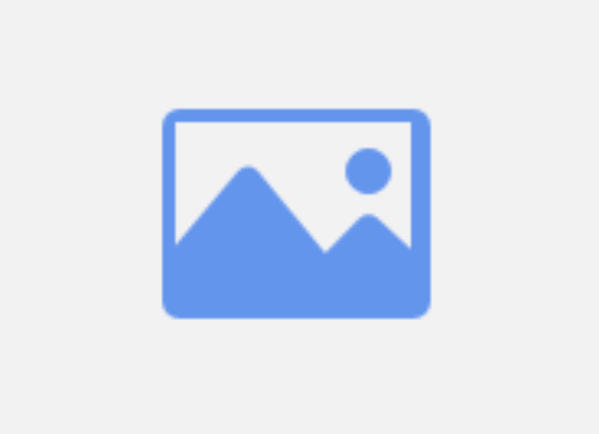
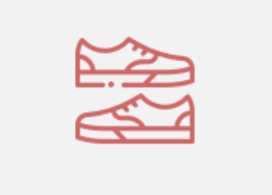

Ej1  Utilizar marcado semántico HTML5. Sigue buenas prácticas CSS y utiliza reglas mínimas (optimizando código). El diseño debe quedar lo más parecido posible al original. Aplica a las imágenes del cuerpo un borde verde de 4 px. Al pasar el ratón por estas imágenes se aplicará una sombra difuminada de 3px de color gris. En la versión de escritorio los artículos tendrán una anchura de 320px,se mantendrán en fila y se separarán entre ellos en 10px. En la versión mínima los artículos se verán en una sola columna y se centrarán en la ventana del navegador. El ancho de los artículos será del 100% con un ancho máximo de 600px y un margen interior de 20px. El proyecto debe entregarse subido en GitHub, por tanto debe entregarse una URL visualizable.
Ej2  Utilizar marcado semántico HTML5. Presta atención a la accesibilidad web de las imágenes y los encabezados. Sigue buenas prácticas CSS y utiliza reglas mínimas (optimizando código). El diseño debe quedar lo más parecido posible al original. Al pasar el ratón por estas imágenes se aplicará una sombra difuminada de 4px de color marrón. En la versión de escritorio los artículos tendrán una anchura de 420px,se mantendrán en fila y se separarán entre ellos en 15px. En la versión mínima los artículos se verán en una sola columna y se centrarán en la ventana del navegador. El ancho de los artículos será del 100% con un ancho máximo de 600px y un margen interior de 20px. Añade en el footer los iconos de dos redes sociales utilizando un repositorio de iconos de como Font Awesome. El proyecto debe entregarse subido en GitHub, por tanto debe entregarse una URL visualizable.